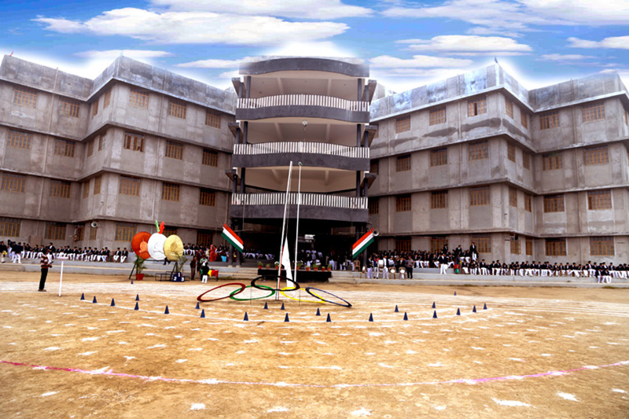
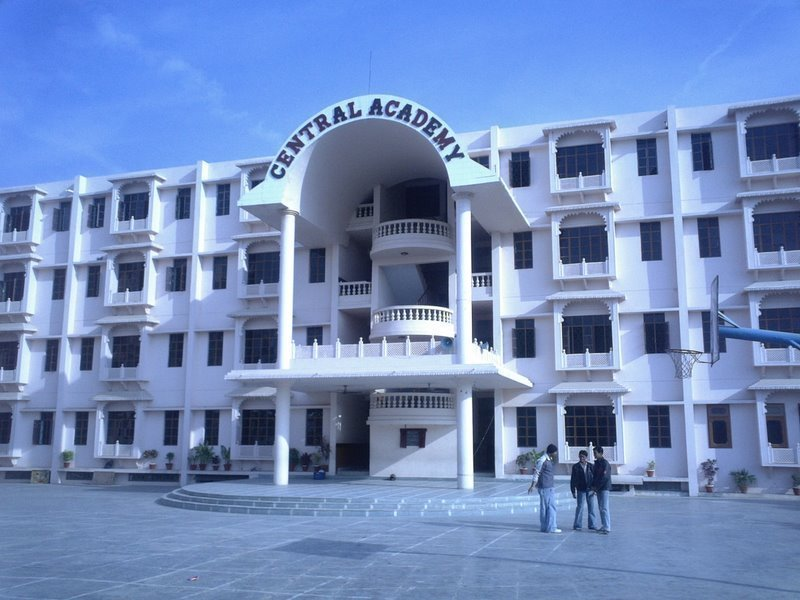
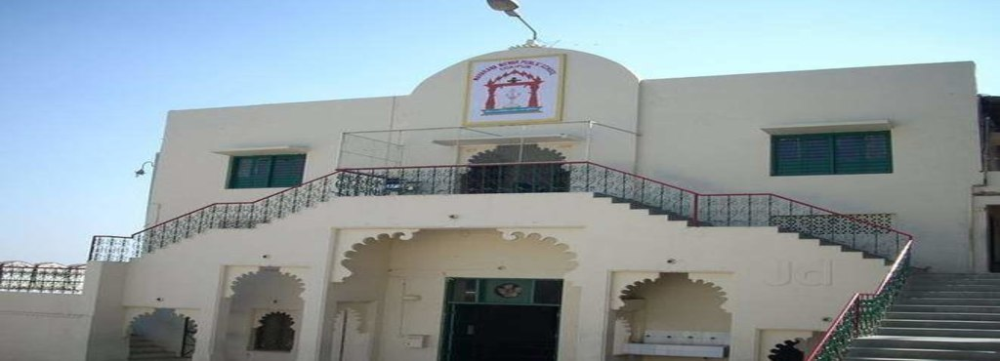
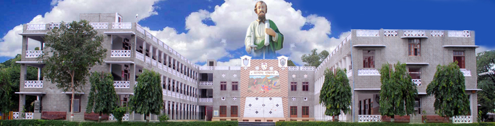
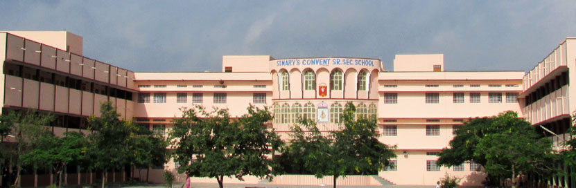
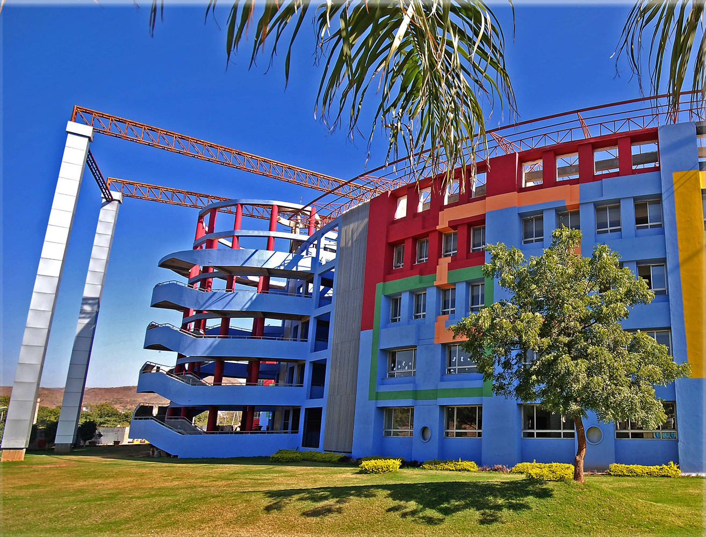
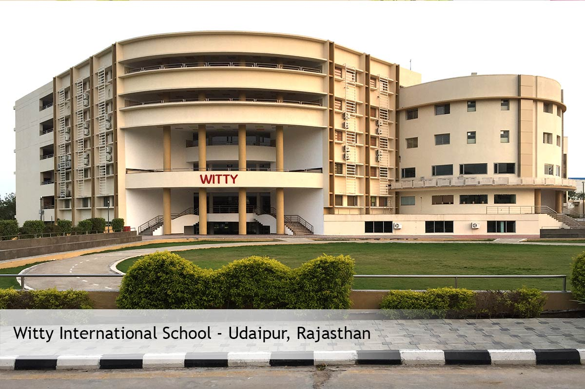
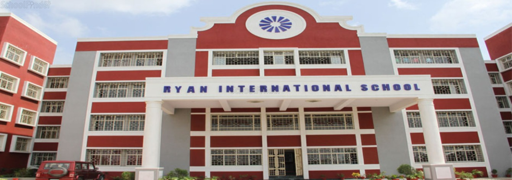
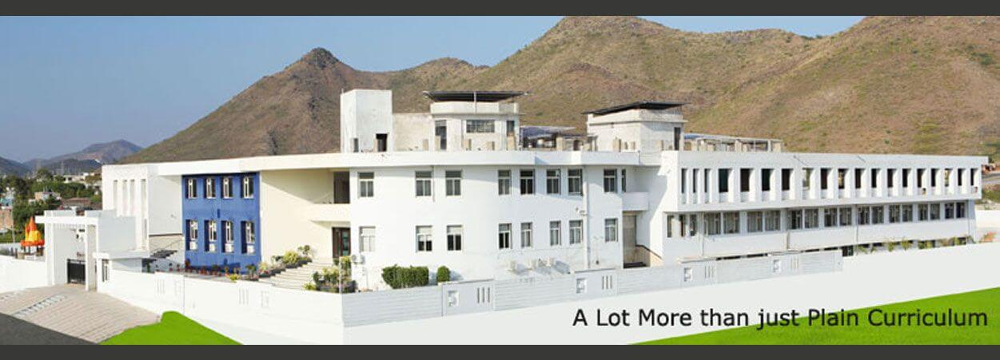
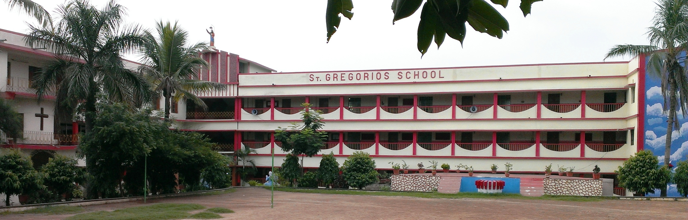

Popular School
St.Anthony's Sr.Sec.School
St. Anthony's Senior Secondary School is located in Udaipur, Rajasthan, India.It is affiliated by the Central Board of Secondary Education.It is an English medium coeducational secondary school with two campuses.The school celebrates Director's Day every year on 17 December.
Website:- www.sasudaipur.com
Central Academy Senior Secondary School
Central Academy is a chain of schools founded by the late Shri Triyugi Narayan Mishra, an educationist, social activist, and philanthropist.
The first branch of Central Academy was established in Jodhpur , (also known as the mother branch) in the state of Rajasthan, India in 1976 under the leadership Shri T. N. Mishra. He believed in the dictum of Dr. Sarvepalli Radhakrishnan, philosopher, teacher and former President of India, which conveys that education must make a child a good human being first and foremost, and then a worthy scholar.
Website:- www.centralacademyschools.org
Maharana Mewar Public School
Maharana Mewar Public School is an English medium school, affiliated to the Central Board of Secondary Education, Delhi. It is a co-educational senior secondary school. It provides a platform for students to develop their careers in the field of engineering, medicine, arts and management. It gives due importance to physical education as well. It is located in the center of the ancient and historic city of Udaipur, near the City Palace, the abode of the revered lineage of the rulers of Mewar
The school is under a managing committee, constituted by Shriji Arvind Singhji Mewar of Udaipur, Chairman & Managing Trustee, Vidyadan Trust. Smt. Vijayaraj Kumari Mewar of Udaipur is the Chairperson of the Trust. The day-to-day affairs are looked by Mr. Lakshyaraj Singh of Udaipur. The principal is its ex officio Secretary.
Website:-www.mmpsschool.org
St.Pauls Sr.Sec.School
St. Paul’s School Udaipur, was founded on the 16th of July 1953 as an institution with a Mission for the cause of Education with a vision. It was owing to the dedicated efforts of legendaries like Rev. Fr. Edgar, Fr. Victor, Bro. Rezier . It saw 60 summers and winters.
It is a private, unaided Catholic Minority Institution permanently recognised by the Central Board of Secondary Education. It is governed and managed by The Catholic Diocesan Education Society, Udaipur.
It is situated right in the heart of the city of lakes, adjacent to N.H. 8, linking the political capital (New Delhi) and the Economic Capital (Mumbai) of India. Its surroundings are Salubrious; with a variety of trees providing umbrella like protection, shade and shelter; a vast and commodious ground with manicured carpet grass, providing an unpolluted, exciting and attractive learning environment.
Website:-www.stpaulsudaipur.com
St.Mary's Convent Sr. Secondary School
It was always in the heart of the educational and charitable society of Franciscan Sisters of St. Mary’s Convent at Udaipur to have one more school which aims at the synthesis of spiritual values and scientific achievements of the East and the West; respectively whose educational programmes should have the concept of new standards and complete development; where students should aim at higher and higher achievement and be successful wherever they go with their hard work, determination, sincerity and genuine love for the nation. St. Mary’s Convent School at Teetardi opened on 6th July 2000 with 220 students.
From a modest beginning we have come a long way and are today recognized as one of the few private endeavors in education towards promoting excellence in the youth of India. It was upgraded to the secondary level in 2006. It was further upgraded to senior secondary level in the year 2009.
Website:-www.stmarysteetardiudaipur.edu.in
Delhi Public School
DPS Udaipur has more meaning to it than just imparting bookish education to the students. Young students who enter into this beautiful and fulfilling setup, will experience a change to become able human beings with an ability to excel in all fields of life, be it education, career or personal front. We aim at a creative education, to bring out the best in students. In teaching them how to think for themselves and in developing their ability to solve their problems, the school is always interested in students as individuals and seeks to challenge them to become fully alive and responsive to the issues of new times. The curriculum is enriched by a strong reading programme, cultural exchange through different genres of dance and music, computer programme beginning from kindergarten to class XII.
Website:-www.dpsudaipur.com
Witty International School
DPS Udaipur has more meaning to it than just imparting bookish education to the students. Young students who enter into this beautiful and fulfilling setup, will experience a change to become able human beings with an ability to excel in all fields of life, be it education, career or personal front. We aim at a creative education, to bring out the best in students. In teaching them how to think for themselves and in developing their ability to solve their problems, the school is always interested in students as individuals and seeks to challenge them to become fully alive and responsive to the issues of new times. The curriculum is enriched by a strong reading programme, cultural exchange through different genres of dance and music, computer programme beginning from kindergarten to class XII.
Website:-www.wittykidsindia.com
Ryan International School
Ryan International School, Udaipur is established in 2012.The school emphasises on the cultivation of all the three dimensions of the mind, body and spirit. Individual attention is paid to all the children for complete development of their potential whereas slow learners or children with learning difficulties are closely monitored and appropriate measures are undertaken to achieve maximum learning at individual pace.
Website:-www.ryaninternational.org
Rockwoods High School
Rockwoods High School (Best Preschool in Udaipur) Campus is spread over 2.5 acres of land with an attractive, uniquely designed building incorporating all modern facilities & amenities. The campus has natural, lush green surroundings with landscaped beautiful gardens and water bodies, to provide a conducive environment for the healthy growth of its students.
Website:-www.rockwoodshighschool.com
Rockwoods High School
Rockwoods High School (Best Preschool in Udaipur) Campus is spread over 2.5 acres of land with an attractive, uniquely designed building incorporating all modern facilities & amenities. The campus has natural, lush green surroundings with landscaped beautiful gardens and water bodies, to provide a conducive environment for the healthy growth of its students.
Website:-www.rockwoodshighschool.com
St.Gregorios Sr.Sec.School
ST. GREGORIOS SENIOR SECONDARY SCHOOL, UDAIPUR an English medium Co-educational Sr. Secondary School, affiliated to the C.B.S.E. New Delhi, came into existence on 15th JAN, in 1980. Named after one of the greatest saints of last century, ST. GREGORIOS Of parumala, this temple of learning was lighted for life as an educational venture of the ST. GREGORIOS ORTHODOX CHURCH society, udaipur with the sole objective of imparting sound and purposeful education-physical intellectual, social-on a sound footing of democratic, moral, ethical and spiritual values, to boys girls of all coounities, irrespective of their castes and religions, with a missionary zeal.
The school also endeavours to inculcate in children ardent feeling of patriotism, tolerance, self-sacrifice and pride in the rich and varied, cultural heritage of our country so that they would live and act as useful responsible and law-abiding citizens of our country.